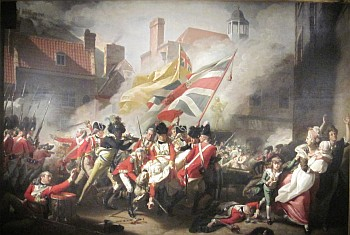

San Antonio,
Texas,
USA.
Lé 23 d'févri, 1980.
Un anmîn d'Angliétèrre, lé Révérend Michael St. John Nicolle, Recteu d'l'églyise dé St. Martîn à Desford, Leicestershire, m'a env'yé un mio d'gâzette, êcrit par "Meridian", dé d'dans ieune dé Jèrri qué j'n'ai pon 'couo r'chu, auve un bieau portrait du couôsîn Edward John Le Feuvre tch'est en train d'montrer un portrait enfrêmé où'est qu'nou vait un p'tit portrait du Mâjeur Peirson, iun d'l'églyise parouaîssiale dé St. Hélyi, et aut' portraits au sujet du chent'naithe dé la batâle dé Jèrri célébré en mil huit chent huiptante-tchi'ieune. V'là tchi nouos ramémouaithe qué l'six d'janvyi d'l'année tchi veint es'sa san deuxième chent'naithe. Y'a-t-i' pèrsonne en Jèrri tchi s'en va s'en d'menter et mett' l'affaithe en allant pour eune célébrâtion dîngne dé l'occâsion?
L'articl'ye dé "Meridian" nouos dit qué l'Sieur Edward Le Feuvre est d'avis qué l'monument pliaichi dans l'églyise dé St. Hélyi en l'honneu du Mâjeur Peirson n'est pon suffisant comme objet d'èrconnaîssance à la mémouaithe du Mâjeur tchi fît l'sacrifice dé sa vie pour empêchi l'Ile d'êt' prînse par les Francais. Eh bein, nou peut dithe qué l'Sieur Edward a p't-êt' raîson. Ouaithe qué ch'est un bieau monument, i' n'est pon situé dans eune partie d'l'églyise tch'est veue par lé grand nombre dé vîsiteurs tch'entrent d'dans touos l's êtés, et j'mé d'mande même s'i' n'y'a pon un tas d'Jèrriais, prîncipalement les jannes d'aniet, tchi savent exactément où'est tch'il est.
Pour mé, sans doute, il est dans un coin tout spécial et honorabl'ye viyant tch'il est dans la chapelle dé l'églyise parouaîssiale tch'est dêdiée à Nouotre Danme, la Sainte Vièrge Marie, où'est qu'touos l's Anglyicans (et quâsi touos les vrais Jèrriais sont Anglyicans) peuvent lé vaie quand i' vont dans chutte chapelle pour vénérer la Sainte Vièrge. Mais i' y'a ieu tant d'changements dans l'églyise ches dreines années qué j'mé d'mande tchiquefais combein d'Anglyicans savent qu'oulle est honorée par lus églyise, et qu'un cantique (nunmétho 109 dans La Litourgie) nouos dit: "Pour l'humble et tremblante Marie quelle surprise et quel bonheur! Par l'Eternel être choisie être la mère du Sauveur!" Et qu'nou lî dait au mains la vénérâtion des fidèles.

Si l's autorités d'l'Ile ont l'întention d'célébrer l'deuxième chent'naithe dé la fanmeuse Batâle dé Jèrri l'année tchi veint, i' s'en va êt' temps d'mett' l'affaithe en allant. Est-i' possibl'ye dé trouver eune pliaiche assez conv'nabl'ye et dîngne dé l'empliaichement d'eune estatue du Mâjeur Peirson tchi donnit sa vie pour empêchi Jèrri d'êt' engaûmé par la France comme lé reste dé la Nouormandie? Et est-i' possibl'ye d'en produithe ieune, eune estatue du Mâjeur, en temps?
S'i' fallait suggéther un empliaichement, jé s'sais d'avis qué l'Vièr Marchi est la miyeu pliaiche - du côté d'l'églyise et en fache dé l'estatue du Rouai George. Sans doute, ch'est où'est tch'est lé Rouai qu'eune estatue du Mâjeur Peirson dév'thait être, viyant qu'ch'est tout près d'la tch'i' fut tué l'jour dé la batâle, mais oulle a 'té là si longtemps qué ch'n'est probabliément pon la chose dé l'êchangi. Eune aut' mangnifique pliaiche éthait 'té La Parade, domaine du Général Don. J'mé d'mande si i' s'en va êt' nécessaithe dé bouogi l'Général à cause des neuves offices tchi s'en vont êt' bâties là.
Enfîn, ch'n'est pon à mé d'êprouver à donner d's avis ès autorités d'Jèrri. I' sont bein capabl'yes dé lus en d'menter ieux mêmes, d'un empliaichement pour tchique sorte dé monument. Mais ch'est honteux qué la seule chose tchi montre la pliaiche où'est tch'i' fut abattu par eune balle dé l'ennemîn est deux-s'trais mots sus l'pîngnon d'eune aubèrge!
Au c'menchement d'chutte lettre, j'ai mentionné l'Révérend Michael St. John Nicolle. J'peux ajouôter qu'Moussieu Nicolle est Jèrriais - fis d'vièrs Jèrriais. San p'pèe 'tait Collecteux à l'églyise dé St. Hélyi pour bein d's années, iun d'ses anchêtres 'tait Recteu d'ieune des pâraisses dé la campangne, et sa m'mèe 'tait la fille du Cap'taine Stèr, chef gardgien du phare dé La Corbiéthe pour tchiques années. I' méthite d'êt' considéthé pour appointement à tchique bénéfice en Jèrri quand y'étha occâsion, et j'sai bein tch'i' s'sait prêt à r'vénîn en Jèrri. I' pathaît qu'l'Île est hardi à court dé minnistres Anglyicans mais qu'l'Evêque du diocèse veurt lînmiter l'nombre à tant - viyant qu'ch'est d'même en Angliétèrre. N'est-i' pon grand temps dé dêcliather l's Îles dé la Manche un diocèse? Dé même, les Jèrriais pouôrraient controller lus affaithes ecclésiaistiques.
George d'La Forge
Viyiz étout: